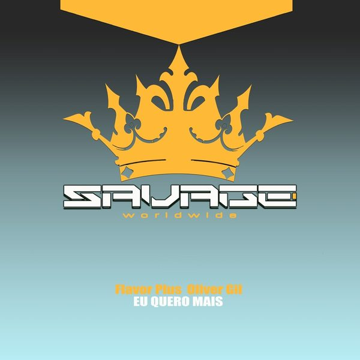

I 18 dischi e le top 6
 1
Summertime SadnessTommy Veanud
1
Summertime SadnessTommy Veanud
 2
Tribe My HouseDanielle Trebone
2
Tribe My HouseDanielle Trebone
 3
Keep On Dancin'Wenzday
3
Keep On Dancin'Wenzday
 4
2009Tony Romera
4
2009Tony Romera
 5
Break 4 Love (Massivedrum Remix)Massivedrum, Sexy Sound System
5
Break 4 Love (Massivedrum Remix)Massivedrum, Sexy Sound System
 6
BailaAlex Vard
6
BailaAlex Vard
 7
Con RonYvvan Back, Jean Casas, Drew (US)
7
Con RonYvvan Back, Jean Casas, Drew (US)

8 Eu Quero MaisOliver Gil, Flavor Plus 9
TomaAdam Asenjo, Hendi
9
TomaAdam Asenjo, Hendi
 10
The BlockRaffi Habel
10
The BlockRaffi Habel
 11
All This TimeJazzy, Sonny Fodera
11
All This TimeJazzy, Sonny Fodera
 12
The SoundTita Lau x Kevin Saunderson x Reese & Santonio
12
The SoundTita Lau x Kevin Saunderson x Reese & Santonio
 13
Side ManJuos ft. Techno Tupac
13
Side ManJuos ft. Techno Tupac
 14
Lick ItWill K
14
Lick ItWill K
 15
RushMartin Ikin, Hayley May
15
RushMartin Ikin, Hayley May
 16
DON'T DEPENDHelang
16
DON'T DEPENDHelang
 17
Always ft. Eric B TurnerOFFAIAH, David Penn & Thando
17
Always ft. Eric B TurnerOFFAIAH, David Penn & Thando
 18
Sleepless NightsArmin van Buuren & Martin Garrix feat. Libby Whitehouse
18
Sleepless NightsArmin van Buuren & Martin Garrix feat. Libby Whitehouse
La tracklist
- 1 Summertime Sadness Tommy Veanud TV Recordings
- 2 Tribe My House Danielle Trebone Beats for Sports
- 3 Keep On Dancin' Wenzday Confession Records
- 4 2009 Tony Romera Toolroom Records
- 5 Break 4 Love (Massivedrum Remix) Massivedrum, Sexy Sound System Plastika (PT)
- 6 Baila Alex Vard Cafe De Anatolia REC
- 7 Con Ron Yvvan Back, Jean Casas, Drew (US) Lost Beach Records
- 8 Eu Quero Mais Oliver Gil, Flavor Plus Savage Disco
- 9 Toma Adam Asenjo, Hendi HOTOVEN RECORDS
- 10 The Block Raffi Habel dt weapons
- 11 All This Time Jazzy, Sonny Fodera Solotoko
- 12 The Sound Tita Lau x Kevin Saunderson x Reese & Santonio Armada Music
- 13 Side Man Juos ft. Techno Tupac Thrive Music
- 14 Lick It Will K Sweat It Out
- 15 Rush Martin Ikin, Hayley May Toolroom Records
- 16 DON'T DEPEND Helang AETERNA Records
- 17 Always ft. Eric B Turner OFFAIAH, David Penn & Thando Toolroom Records
- 18 Sleepless Nights Armin van Buuren & Martin Garrix feat. Libby Whitehouse Armada Music